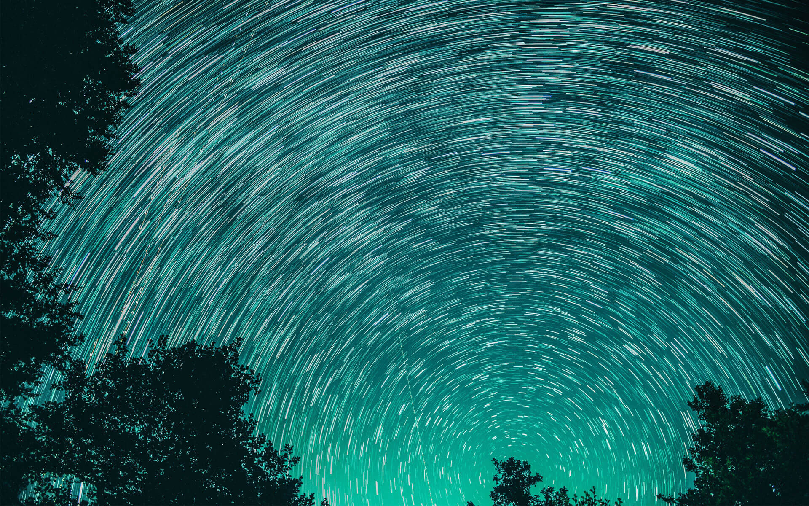

摘星體驗
億年冰封的極地，恍若宇宙盡頭，位於太陽系極點90°
的天王星，經上億年冰河刻蝕而成的壯烈冰谷星球，在那永晝的日與夜間，在天空形成許多顆小小閃亮星星,讓遊客體驗摘星活動,摘一顆屬於你的小行星作為紀念。

營火露營
厭倦了都市喧囂、水泥高樓與路上的車水馬龍，高壓的生活壓得我們無法喘氣，何不給自己一個放鬆的機會，來土星體驗星球露營，這裡可以讓心靈獲得平靜與放鬆，小孩可以嬉戲，大人可歌唱跳舞，當累了就席地而坐，圍繞著營火分享著彼此的故事。
夜賞極光
水星一年有三分之二的時間都會看到極光，更有著極光之星的盛名，水星還有極地溫泉，可以讓人邊泡著溫泉享受滿天星空的感動。
夜探星空
木星最有名的鑽石雨,五月至六月是鑽石雨季,下過雨後的晚上,是欣賞鑽石星空的最佳時機,可以至星空廣場觀賞,星空廣場有星空酒吧與當地歌手駐唱,很適合小酌一杯,聊聊天增進感情。

摘星體驗
億年冰封的極地，恍若宇宙盡頭，位於太陽系極點90°
的天王星，經上億年冰河刻蝕而成的壯烈冰谷星球，在那永晝的日與夜間，在天空形成許多顆小小閃亮星星,讓遊客體驗摘星活動,摘一顆屬於你的小行星作為紀念。
營火露營
厭倦了都市喧囂、水泥高樓與路上的車水馬龍，高壓的生活壓得我們無法喘氣，何不給自己一個放鬆的機會，來土星體驗星球露營，這裡可以讓心靈獲得平靜與放鬆，小孩可以嬉戲，大人可歌唱跳舞，當累了就席地而坐，圍繞著營火分享著彼此的故事。